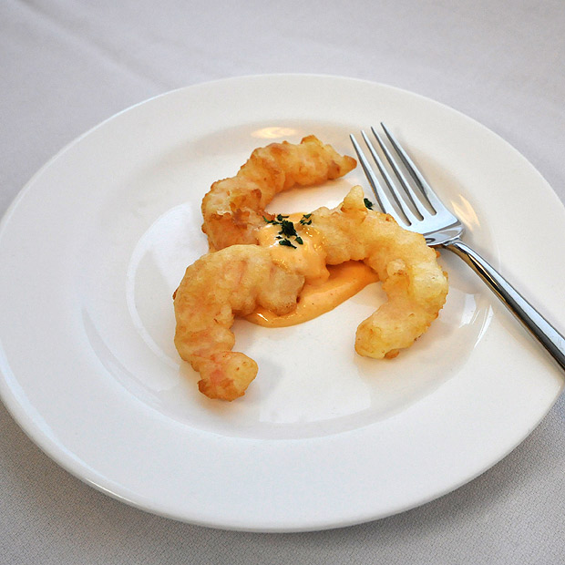

Ingredients
Preparation
Gather all the ingredients and equipment.
Prepare the batter by first sifting the dry ingredients into a bowl. Combine eggs, milk and oil and slowly pour into the dry ingredients while whisking until batter is smooth. Refrigerate until needed.
Combine the dipping sauce ingredients in a small saucepan. Heat to a boil, remove from heat and keep warm for service.
Prepare the main ingredients for the tempura. Carrots and sweet potatoes should be blanched lightly in boiling salted water or by steaming. Shock, drain, and reserve.
Ready the fry station by preheating the oil to 350°F (177°C), assembling all main ingredients in a hotel pan (on ice), and having the batter ready as well as all necessary utensils.
Begin with the vegetables. First dredge lightly in flour, then dip into the tempura batter. Allow excess batter to drip off and carefully drop into the hot oil, working as quickly as possible. Fry all items until lightly golden and crisp. Remove with a skimmer or slotted spoon, place to drain and keep warm under a heat lamp and proceed on to the next items.
Each portion should receive an ample assortment of fried vegetables, 2 shrimp, 2 fish pieces, and 3 strips of fried squid.
Arrange on heated plates accompanied by a small cup of the dipping sauce. Garnish as desired.